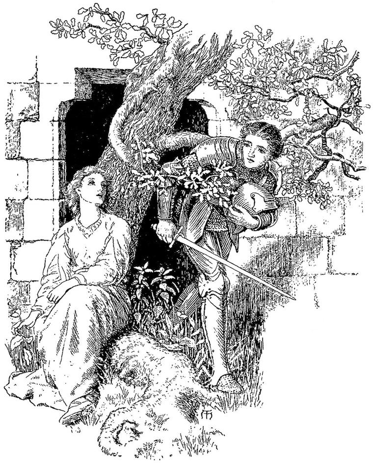

Schoppe, in JEAN PAUL’S Titan.
I think man’s happiest when he forgets himself.”
CYRIL TOURNEUR, The Revenger’s Tragedy.
On the third day of my journey, I was riding gently along a road, apparently little frequented, to judge from the grass that grew upon it. I was approaching a forest. Everywhere in Fairy Land forests are the places where one may most certainly expect adventures. As I drew near, a youth, unarmed, gentle, and beautiful, who had just cut a branch from a yew growing on the skirts of the wood, evidently to make himself a bow, met me, and thus accosted me:
“Sir knight, be careful as thou ridest through this forest; for it is said to be strangely enchanted, in a sort which even those who have been witnesses of its enchantment can hardly describe.”
I thanked him for his advice, which I promised to follow, and rode on. But the moment I entered the wood, it seemed to me that, if enchantment there was, it must be of a good kind; for the Shadow, which had been more than usually dark and distressing, since I had set out on this journey, suddenly disappeared. I felt a wonderful elevation of spirits, and began to reflect on my past life, and especially on my combat with the giants, with such satisfaction, that I had actually to remind myself, that I had only killed one of them; and that, but for the brothers, I should never have had the idea of attacking them, not to mention the smallest power of standing to it. Still I rejoiced, and counted myself amongst the glorious knights of old; having even the unspeakable presumption—my shame and self-condemnation at the memory of it are such, that I write it as the only and sorest penance I can perform—to think of myself (will the world believe it?) as side by side with Sir Galahad! Scarcely had the thought been born in my mind, when, approaching me from the left, through the trees, I espied a resplendent knight, of mighty size, whose armour seemed to shine of itself, without the sun. When he drew near, I was astonished to see that this armour was like my own; nay, I could trace, line for line, the correspondence of the inlaid silver to the device on my own. His horse, too, was like mine in colour, form, and motion; save that, like his rider, he was greater and fiercer than his counterpart. The knight rode with beaver up. As he halted right opposite to me in the narrow path, barring my way, I saw the reflection of my countenance in the centre plate of shining steel on his breastplate. Above it rose the same face—his face—only, as I have said, larger and fiercer. I was bewildered. I could not help feeling some admiration of him, but it was mingled with a dim conviction that he was evil, and that I ought to fight with him.
“Let me pass,” I said.
“When I will,” he replied.
Something within me said: “Spear in rest, and ride at him! else thou art for ever a slave.”
I tried, but my arm trembled so much, that I could not couch my lance. To tell the truth, I, who had overcome the giant, shook like a coward before this knight. He gave a scornful laugh, that echoed through the wood, turned his horse, and said, without looking round, “Follow me.”
I obeyed, abashed and stupefied. How long he led, and how long I followed, I cannot tell. “I never knew misery before,” I said to myself. “Would that I had at least struck him, and had had my death-blow in return! Why, then, do I not call to him to wheel and defend himself? Alas! I know not why, but I cannot. One look from him would cow me like a beaten hound.” I followed, and was silent.
At length we came to a dreary square tower, in the middle of a dense forest. It looked as if scarce a tree had been cut down to make room for it. Across the very door, diagonally, grew the stem of a tree, so large that there was just room to squeeze past it in order to enter. One miserable square hole in the roof was the only visible suggestion of a window. Turret or battlement, or projecting masonry of any kind, it had none. Clear and smooth and massy, it rose from its base, and ended with a line straight and unbroken. The roof, carried to a centre from each of the four walls, rose slightly to the point where the rafters met. Round the base lay several little heaps of either bits of broken branches, withered and peeled, or half-whitened bones; I could not distinguish which. As I approached, the ground sounded hollow beneath my horse’s hoofs. The knight took a great key from his pocket, and reaching past the stem of the tree, with some difficulty opened the door. “Dismount,” he commanded. I obeyed. He turned my horse’s head away from the tower, gave him a terrible blow with the flat side of his sword, and sent him madly tearing through the forest.
“Now,” said he, “enter, and take your companion with you.”
I looked round: knight and horse had vanished, and behind me lay the horrible shadow. I entered, for I could not help myself; and the shadow followed me. I had a terrible conviction that the knight and he were one. The door closed behind me.
Now I was indeed in pitiful plight. There was literally nothing in the tower but my shadow and me. The walls rose right up to the roof; in which, as I had seen from without, there was one little square opening. This I now knew to be the only window the tower possessed. I sat down on the floor, in listless wretchedness. I think I must have fallen asleep, and have slept for hours; for I suddenly became aware of existence, in observing that the moon was shining through the hole in the roof. As she rose higher and higher, her light crept down the wall over me, till at last it shone right upon my head. Instantaneously the walls of the tower seemed to vanish away like a mist. I sat beneath a beech, on the edge of a forest, and the open country lay, in the moonlight, for miles and miles around me, spotted with glimmering houses and spires and towers. I thought with myself, “Oh, joy! it was only a dream; the horrible narrow waste is gone, and I wake beneath a beech-tree, perhaps one that loves me, and I can go where I will.” I rose, as I thought, and walked about, and did what I would, but ever kept near the tree; for always, and, of course, since my meeting with the woman of the beech-tree far more than ever, I loved that tree. So the night wore on. I waited for the sun to rise, before I could venture to renew my journey. But as soon as the first faint light of the dawn appeared, instead of shining upon me from the eye of the morning, it stole like a fainting ghost through the little square hole above my head; and the walls came out as the light grew, and the glorious night was swallowed up of the hateful day. The long dreary day passed. My shadow lay black on the floor. I felt no hunger, no need of food. The night came. The moon shone. I watched her light slowly descending the wall, as I might have watched, adown the sky, the long, swift approach of a helping angel. Her rays touched me, and I was free. Thus night after night passed away. I should have died but for this. Every night the conviction returned, that I was free. Every morning I sat wretchedly disconsolate. At length, when the course of the moon no longer permitted her beams to touch me, the night was dreary as the day.
When I slept, I was somewhat consoled by my dreams; but all the time I dreamed, I knew that I was only dreaming. But one night, at length, the moon, a mere shred of pallor, scattered a few thin ghostly rays upon me; and I think I fell asleep and dreamed. I sat in an autumn night before the vintage, on a hill overlooking my own castle. My heart sprang with joy. Oh, to be a child again, innocent, fearless, without shame or desire! I walked down to the castle. All were in consternation at my absence. My sisters were weeping for my loss. They sprang up and clung to me, with incoherent cries, as I entered. My old friends came flocking round me. A gray light shone on the roof of the hall. It was the light of the dawn shining through the square window of my tower. More earnestly than ever, I longed for freedom after this dream; more drearily than ever, crept on the next wretched day. I measured by the sunbeams, caught through the little window in the trap of my tower, how it went by, waiting only for the dreams of the night.
About noon, I started as if something foreign to all my senses and all my experience, had suddenly invaded me; yet it was only the voice of a woman singing. My whole frame quivered with joy, surprise, and the sensation of the unforeseen. Like a living soul, like an incarnation of Nature, the song entered my prison-house. Each tone folded its wings, and laid itself, like a caressing bird, upon my heart. It bathed me like a sea; inwrapt me like an odorous vapour; entered my soul like a long draught of clear spring-water; shone upon me like essential sunlight; soothed me like a mother’s voice and hand. Yet, as the clearest forest-well tastes sometimes of the bitterness of decayed leaves, so to my weary, prisoned heart, its cheerfulness had a sting of cold, and its tenderness unmanned me with the faintness of long-departed joys. I wept half-bitterly, half-luxuriously; but not long. I dashed away the tears, ashamed of a weakness which I thought I had abandoned. Ere I knew, I had walked to the door, and seated myself with my ears against it, in order to catch every syllable of the revelation from the unseen outer world. And now I heard each word distinctly. The singer seemed to be standing or sitting near the tower, for the sounds indicated no change of place. The song was something like this:
Gathers the glories of the sky,
And binds them into a shining tent,
Roofing the world with the firmament.
And through the pavilion the rich winds blow,
And through the pavilion the waters go.
And the birds for joy, and the trees for prayer,
Bowing their heads in the sunny air,
And for thoughts, the gently talking springs,
That come from the centre with secret things—
All make a music, gentle and strong,
Bound by the heart into one sweet song.
And amidst them all, the mother Earth
Sits with the children of her birth;
She tendeth them all, as a mother hen
Her little ones round her, twelve or ten:
Oft she sitteth, with hands on knee,
Idle with love for her family.
Go forth to her from the dark and the dust,
And weep beside her, if weep thou must;
If she may not hold thee to her breast,
Like a weary infant, that cries for rest
At least she will press thee to her knee,
And tell a low, sweet tale to thee,
Till the hue to thy cheeky and the light to thine eye,
Strength to thy limbs, and courage high
To thy fainting heart, return amain,
And away to work thou goest again.
From the narrow desert, O man of pride,
Come into the house, so high and wide.
Hardly knowing what I did, I opened the door. Why had I not done so before? I do not know.
At first I could see no one; but when I had forced myself past the tree which grew across the entrance, I saw, seated on the ground, and leaning against the tree, with her back to my prison, a beautiful woman. Her countenance seemed known to me, and yet unknown. She looked at me and smiled, when I made my appearance.

“Ah! were you the prisoner there? I am very glad I have wiled you out.”
“Do you know me then?”
“Do you not know me? But you hurt me, and that, I suppose, makes it easy for a man to forget. You broke my globe. Yet I thank you. Perhaps I owe you many thanks for breaking it. I took the pieces, all black, and wet with crying over them, to the Fairy Queen. There was no music and no light in them now. But she took them from me, and laid them aside; and made me go to sleep in a great hall of white, with black pillars, and many red curtains. When I woke in the morning, I went to her, hoping to have my globe again, whole and sound; but she sent me away without it, and I have not seen it since. Nor do I care for it now. I have something so much better. I do not need the globe to play to me; for I can sing. I could not sing at all before. Now I go about everywhere through Fairy Land, singing till my heart is like to break, just like my globe, for very joy at my own songs. And wherever I go, my songs do good, and deliver people. And now I have delivered you, and I am so happy.”
She ceased, and the tears came into her eyes.
All this time, I had been gazing at her; and now fully recognised the face of the child, glorified in the countenance of the woman.
I was ashamed and humbled before her; but a great weight was lifted from my thoughts. I knelt before her, and thanked her, and begged her to forgive me.
“Rise, rise,” she said; “I have nothing to forgive; I thank you. But now I must be gone, for I do not know how many may be waiting for me, here and there, through the dark forests; and they cannot come out till I come.”
She rose, and with a smile and a farewell, turned and left me. I dared not ask her to stay; in fact, I could hardly speak to her. Between her and me, there was a great gulf. She was uplifted, by sorrow and well-doing, into a region I could hardly hope ever to enter. I watched her departure, as one watches a sunset. She went like a radiance through the dark wood, which was henceforth bright to me, from simply knowing that such a creature was in it.
She was bearing the sun to the unsunned spots. The light and the music of her broken globe were now in her heart and her brain. As she went, she sang; and I caught these few words of her song; and the tones seemed to linger and wind about the trees after she had disappeared:
Many ways we wend;
Many days, and many ways,
Ending in one end.
Many a road, and many an inn;
Room to roam, but only one home
For all the world to win.
And so she vanished. With a sad heart, soothed by humility, and the knowledge of her peace and gladness, I bethought me what now I should do. First, I must leave the tower far behind me, lest, in some evil moment, I might be once more caged within its horrible walls. But it was ill walking in my heavy armour; and besides I had now no right to the golden spurs and the resplendent mail, fitly dulled with long neglect. I might do for a squire; but I honoured knighthood too highly, to call myself any longer one of the noble brotherhood. I stripped off all my armour, piled it under the tree, just where the lady had been seated, and took my unknown way, eastward through the woods. Of all my weapons, I carried only a short axe in my hand.
Then first I knew the delight of being lowly; of saying to myself, “I am what I am, nothing more.” “I have failed,” I said, “I have lost myself—would it had been my shadow.” I looked round: the shadow was nowhere to be seen. Ere long, I learned that it was not myself, but only my shadow, that I had lost. I learned that it is better, a thousand-fold, for a proud man to fall and be humbled, than to hold up his head in his pride and fancied innocence. I learned that he that will be a hero, will barely be a man; that he that will be nothing but a doer of his work, is sure of his manhood. In nothing was my ideal lowered, or dimmed, or grown less precious; I only saw it too plainly, to set myself for a moment beside it. Indeed, my ideal soon became my life; whereas, formerly, my life had consisted in a vain attempt to behold, if not my ideal in myself, at least myself in my ideal. Now, however, I took, at first, what perhaps was a mistaken pleasure, in despising and degrading myself. Another self seemed to arise, like a white spirit from a dead man, from the dumb and trampled self of the past. Doubtless, this self must again die and be buried, and again, from its tomb, spring a winged child; but of this my history as yet bears not the record.
Self will come to life even in the slaying of self; but there is ever something deeper and stronger than it, which will emerge at last from the unknown abysses of the soul: will it be as a solemn gloom, burning with eyes? or a clear morning after the rain? or a smiling child, that finds itself nowhere, and everywhere?